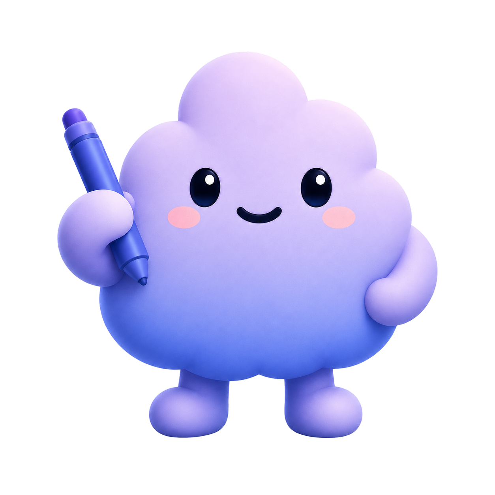

Compile the board
Turn rough intent into a scoped goal.md, state.yaml, and starter /goal command.
 Goal Buddy
Install
Goal Buddy
Install
Open source Codex /goal companion
Goal Buddy prepares a goal.md for the Codex /goal command, keeps state.yaml as local truth, and lets you extend goal state into GitHub, Slack, Linear, and other places when the workflow needs it.
$ npx goalbuddy
$ goalbuddy
Prepared docs/goals/improve-project/
goal.md
state.yaml
notes/
Run next /goal Follow docs/goals/improve-project/goal.md
State local state.yaml
Turn rough intent into a scoped goal.md, state.yaml, and starter /goal command.
Codex reads and updates local state instead of relying on a hosted tracker.
Optional extensions publish handoffs or mirrors while state.yaml stays primary.
Goal Buddy separates mapping, decision, and implementation so /goal can continue from explicit state instead of re-inferring the project every turn.
Capture file ownership, commands, constraints, risks, and unknowns before selecting implementation work.
Convert findings into one task with allowed files, stop conditions, and concrete acceptance checks.
Implement the slice, record changed files and verification output, then hand updated state back to /goal.
Goal Buddy writes the goal charter, machine-readable state, and notes into your repository. /goal can resume from those files, and extensions can mirror the state without replacing it.
Human-readable charter for Codex /goal: intent, scope, acceptance criteria, and run instructions.
# Goal Charter
/goal Follow docs/goals/<slug>/goal.md
Structured board state for active agent, tasks, dependencies, receipts, and verification status.
version: 2
active_agent: judge
Longer Scout findings, Worker receipts, blocked-task notes, and command output summaries.
T003-worker-receipt.md
Run the CLI, answer the intake, then start Codex with the printed /goal command.
Each role writes enough information for the next role to continue, and verification gates completion claims.
Each extension has a catalog ID, a local install command, and a defined handoff surface. The core board still runs from goal.md and state.yaml.
Prepare receipt-aligned commit boundaries and PR handoff Markdown without requiring GitHub credentials.
Mirror state.yaml tasks into ProjectV2 draft issues, fields, and a Goal Board view.
Generate a concise repo map from files, workflows, conventions, and entry points.
Turn failed checks, logs, changed files, and receipts into a recovery brief.
Convert scoped follow-ups, blockers, verification, and review notes into ticket-ready Markdown.
Summarize completed work, blockers, verification status, and next steps for Slack handoff.
MIT licensed. Dependency-free runtime. Built around local goal.md and state.yaml files.